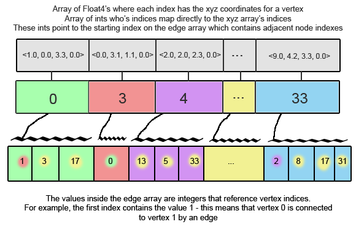

In preparation for SC11, I began experimenting with parallelism using something other than the built in paradigms in the Ada programming language. Unfortunately, it’s not so easy to pick a programming model – popular models include OpenMP, OpenMPI, OpenCL, CUDA, Intel Cilk, and pthreads (among others!). I might do a blog post in the future comparing all these parallelism APIs. Long story short, I decided to work with CUDA… mostly because it seemed exotic, a perfectly valid reason to learn something. Second, the algorithm I planned to implement seemed like it would be a good fit for the hardware. Unfortunately, this blog post doesn’t culminate with a finished, functioning algorithm. Instead, I will be focusing on the process I went through working on the project and what I learned through my failure. I think every programmer has a huge stack of unfinished projects and I feel that these are the projects that push one to learn the most.
I attempted to implement a 3D version of the Fruchterman-Reingold algorithm. The Fruchterman-Reingold algorithm is a force-based graph layout algorithm. Force-based meaning that it treats each vertex and edge as if it were a physical object whose position is influenced by forces around it. You can imagine that the algorithm treats each vertex as an electron and each edge as a spring – the electrons all repel against eachother, while the springs pull together. The pseudocode is as follows:
2
3
4
5
6
7
8
9
10
11
12
13
14
15
16
17
18
19
20
21
22
23
24
25
26
27
28
29
30
31
32
33
34
35
36
37
38
39
40
41
42
43
G = (V,E); # The vertices are assigned random initial positionsg
k = sqrt(area/count(vertices));
def fa(x):
return (x*x)/k;
def fr(x):
begin (k*k)/x;
# Slightly arbitrary, modern versions use an epsilon
# value for when total movement falls under a certain range
for i in range(0,44):
# Calculate the repulsive forces on vertexes/electrons
for v in G.vertexes():
# Each vertex has two vectors: position and displacement
v.displacement = (0,0,0);
for u in G.vertexes():
if u != v:
# diff is the difference vector
diff = v.position - u.position;
v.displacement = v.displacement + (diff/magnitude(diff)) * fr(magnitude(diff));
# Calculate the attractive forces on edges/springs
for e in G.edges():
# Each edge is a pair of vertices (u and v)
diff = e.v.position - e.u.position;
e.v.displacement = e.v.displacement - (diff/magnitude(diff)) * fa(magnitude(diff));
e.u.displacement = e.u.displacement + (diff/magnitude(diff)) * fa(magnitude(diff));
# Limit the max displacement to a temperature t and keep them inside the frame
# The temperature t allows for large movements at the beginning of the loop
# and smaller, more refined movements near the end. AKA Simulated Annealing
for v in G.vertexes():
v.position = v.position + (v.displacement/magnitude(v.displacement)) * min(v.displacement, t);
v.position.x = min(W/2, max(-W/2, v.position.x));
v.position.y = min(L/2, max(-L/2, v.position.y));
# Reduce the temperature as the layout approaches a better configuration
# .9^i gives us a max movement of ~1% in the last iteration
# Better cooling methods exist
t = pow(.9, i);
As you can see, it’s a reasonably straight-forward algorithm and the outer-loop on all the vertices is readily parallelizable. Not to mention, I’ve implemented the 2D version before (with a lot of trouble) and I’d read a number of journal articles on similar graph layout methods. Finally, I’d worked through a number of chapters in CUDA by Example and was confident that I understood CUDA well enough to write some naïve code. With all these things in mind, I felt quite confident about implementing the parallel portion of the algorithm. My main concerns were actually in the visualization portion.
The first challenge I needed to solve was drawing the graph. Without a navigable 3D representation of the graph, I would have no way to visually debug or determine the correctness of my algorithm. I played around a little bit with GLUT and GLT ZPR before I determined that learning OpenGL would be out of the scope of this project. So, I began to look at various Math Visualization pckages and remembered the demos Enthought gave of Mayavi at the SEG 2011 conference. After downloading the student distribution of their Python package and following a few tutorials, I had 3D graphs displaying! Testing with graphs of 10,000 vertices worked, but ~5000 seemed to be the sweet spot that made everything smooth. I’m sure that the drawing code could be optimized for larger graphs.
2
3
4
5
6
7
8
9
10
11
12
13
14
15
16
17
18
19
20
21
22
23
24
25
26
27
28
29
30
31
32
33
34
import numpy as np
import numpy.ma as ma
from enthought.mayavi import mlab
# Generate graph to visualize
#H=nx.random_lobster(100,0.9,0.9)
H=nx.balanced_tree(3, 5)
G=nx.convert_node_labels_to_integers(H)
# 3d spring layout (SLOW)
pos=nx.spring_layout(G,dim=3,scale=100)
# numpy array of x,y,z positions in sorted node order
xyz=np.array([pos[v] for v in sorted(G)])
# scalar colors
scalars=np.array(G.nodes())+5
mlab.figure(1, bgcolor=(0, 0, 0))
mlab.clf()
pts = mlab.points3d(xyz[:,0], xyz[:,1], xyz[:,2],
scalars,
scale_factor=1,
scale_mode='none',
colormap='Blues',
resolution=20)
pts.mlab_source.dataset.lines = np.array(G.edges())
tube = mlab.pipeline.tube(pts, tube_radius=0.1)
mlab.pipeline.surface(tube, color=(0.8, 0.8, 0.8))
mlab.show() # interactive window
Since I was already doing the display in Python, I looked for CUDA python solutions and found the excellent pyCuda library. PyCUDA allows a programmer to embed C code inside their python scripts and use numpy and its drivers for creating large arrays and copying to/from the device. It’s an incredibly elegant solution with almost no performance hit on the CUDA side of things. So, I devised the following way to store the necessary graph information in a few arrays. NOTE: Using a structure of arrays instead of an array of structures would be more optimal.

All of this worked beautifully and everything was being stored in my array structures. I copied these to the device and now all that was remaining was the actual CUDA algorithm.
2
3
4
5
6
7
8
9
10
11
12
13
14
15
16
17
18
19
20
21
22
23
24
25
26
27
28
29
30
31
32
33
34
35
36
37
38
39
40
41
42
43
44
45
46
47
48
49
50
G=nx.convert_node_labels_to_integers(H)
print "generated graph"
DEPTH = 10;
# Generated GPU XYZ in the format [ [1, 2, 3, w], [2, 2, 2, w] ]
# Values are random between 0 and DEPTH
gpu_xyz = np.random.randn(G.number_of_nodes(),4) * DEPTH
gpu_xyz = gpu_xyz.astype(np.float32)
# Generate gpu_vtoe - each index represents a vertex. each index
# contains an int mapping it to the list of edges
# If it contans -1, that means their are no edges
# and gpu_emap - contains integers pointing to vertexes
gpu_vtoe = np.ones(shape=G.number_of_nodes(), dtype=np.int32)
gpu_vtoe = gpu_vtoe*-1;
gpu_emap = np.zeros(shape=G.number_of_edges(), dtype=np.int32)
cur_v = -1
index = 0
for pair in G.edges():
if pair[0] != cur_v:
cur_v = pair[0]
gpu_vtoe[cur_v] = index
gpu_emap[index] = pair[1]
index = index+1
print "Generated GPU data types"
# Copy over data
a_gpu_xyz = cuda.mem_alloc(gpu_xyz.nbytes)
cuda.memcpy_htod(a_gpu_xyz, gpu_xyz)
a_gpu_vtoe = cuda.mem_alloc(gpu_vtoe.nbytes)
cuda.memcpy_htod(a_gpu_vtoe, gpu_vtoe)
a_gpu_emap = cuda.mem_alloc(gpu_emap.nbytes)
cuda.memcpy_htod(a_gpu_emap, gpu_emap)
gpu_cool = np.ones(shape=(1), dtype=np.float32)
a_gpu_cool = cuda.mem_alloc(gpu_cool.nbytes)
cuda.memcpy_htod(a_gpu_cool, gpu_cool)
gpu_k = np.ones(shape=(1), dtype=np.float32)
gpu_k[0] = 0.01*pow((DEPTH*DEPTH*DEPTH/G.number_of_nodes()),1.0/3)
a_gpu_k = cuda.mem_alloc(gpu_k.nbytes)
cuda.memcpy_htod(a_gpu_k, gpu_k)
This is where the successes end and where I learned some very important lessons. I implemented the algorithm from the paper as straight-forward as possible. I bypassed the pitfall of premature optimization (which is hard to dodge when the goal is speed) by ignoring optimizations like using shared memory, Float3 vs Float4, or various block sizes and thread counts. After fixing a few syntax and pointer errors, the code was compiling. That’s when I started getting NaN’s. Some computation in the algorithm was giving me xyz values that couldn’t be represented as floats.
2
3
4
5
6
7
8
9
10
11
12
13
14
15
16
17
18
19
20
21
22
23
24
25
26
27
28
29
30
31
32
33
34
35
36
37
38
39
40
41
42
43
unsigned int selfIdx = (blockIdx.x*blockDim.x)+threadIdx.x;
float4 selfDisplacement = make_float4(0.0f,0.0f,0.0f,0.0f);
float4 selfPosition = xyz[selfIdx];
int i = 0;
// Loop through Vertices, calculating force for self
for(i = 0; i < vertex_count; i = i+1) {
if(i != selfIdx) {
float4 otherPosition = xyz[i];
float4 delta = selfPosition - otherPosition;
selfDisplacement = selfDisplacement + ((delta/magnitude(delta)) * f_r(magnitude(delta), *k));
}
}
// For edges connected to this vertex
// I'm only modifying this vertex's position
int start = vtoe[selfIdx];
int end = selfIdx+1;
if(start != -1) {
int done = 0;
// Find next index that is not -1
while(done == 0) {
if(vtoe[end] != -1) {
done = 1;
} else {
end = end + 1;
}
}
end = vtoe[end];
for(i = start; i < end; i = i + 1) {
int otherVertexIdx = emap[i];
float4 otherPosition = xyz[otherVertexIdx];
float4 delta = selfPosition - otherPosition;
selfDisplacement = selfDisplacement + ((delta/magnitude(delta)) * f_a(magnitude(delta), *k));
}
}
xyz[selfIdx].x = xyz[selfIdx].x + ((selfDisplacement/magnitude(selfDisplacement)) * min(selfDisplacement.x, *cool)).x;
xyz[selfIdx].y = xyz[selfIdx].y + ((selfDisplacement/magnitude(selfDisplacement)) * min(selfDisplacement.y, *cool)).y;
xyz[selfIdx].z = xyz[selfIdx].z + ((selfDisplacement/magnitude(selfDisplacement)) * min(selfDisplacement.z, *cool)).z;
}
I narrowed it down to the Edge forces section, but after many hours of debugging I could not determine why these calculations were incorrect.
First, academic pseudo-code isn’t terribly reliable. Even in the original paper by Fruchterman and Reingold their were typos in the pseudo-code. In most cases, Computer Science research and benchmarks should be trivial to reproduce, but I think in practice it’s not.
Second, write an iterative solution to test for correctness before parallelizing it. If I had gotten my 3D algorithm working sequentially, I could have avoided the NaN bug on the edge traversals.
Third, I updated my CUDA drivers from NVIDIA midway through the project which intermittently broke the nvcc compiler. I spent a few hours determining what the cause of these errors were (they didn’t show up in Google).
I got a great overview of CUDA and some of its strengths. CUDA isn’t so different from developing with other parallel tools – it just excels at number crunching.
C is not the best tool for demos and prototyping. Using python and available software packages, I saved dozens of hours when prototyping. I suppose its just a case of using the best tool for the job.
Original Fruchterman Reingold Paper
A huge collection of papers on a variety of graph layout topics
Mayavi by Enthought